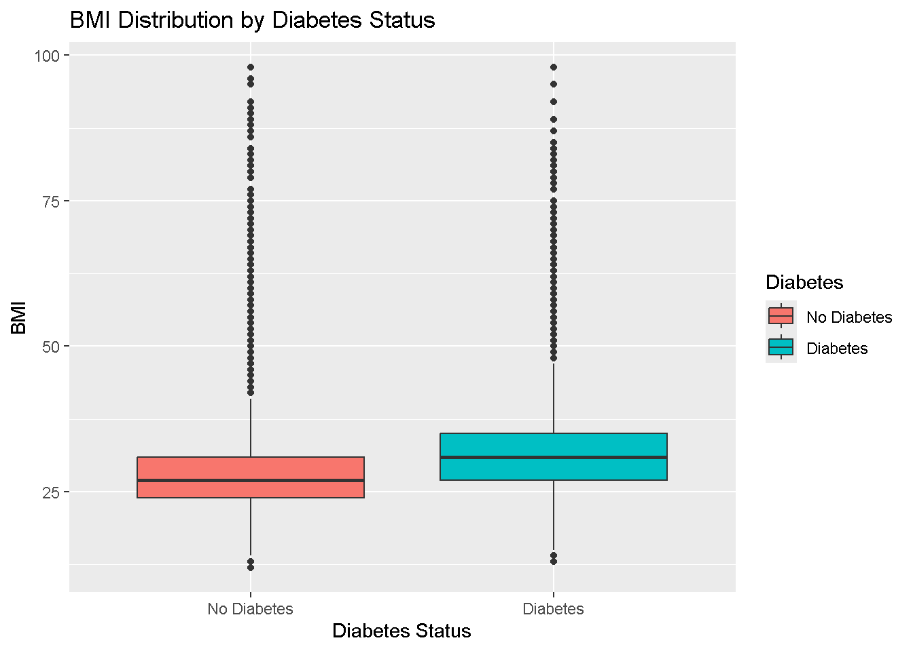
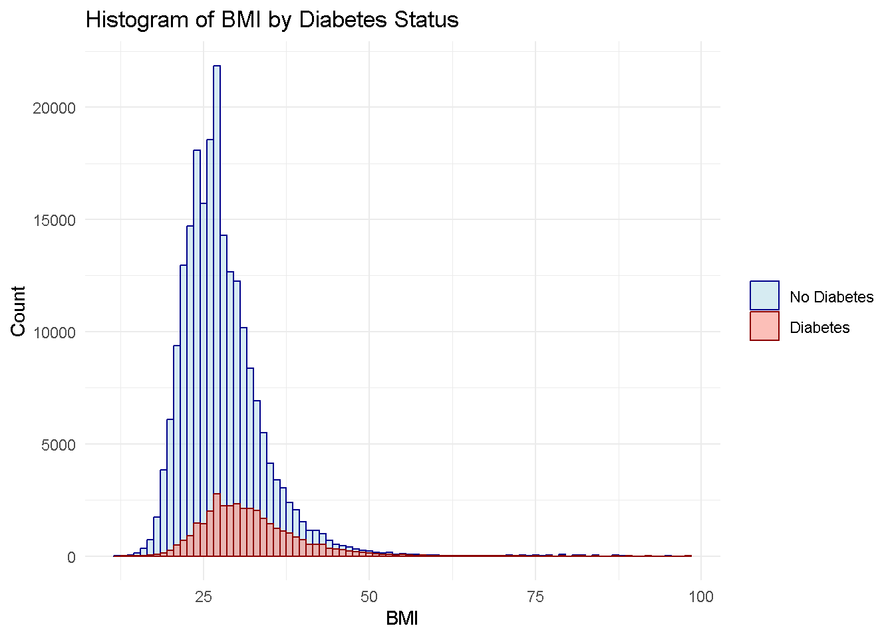

In this exploratory analysis, we are going to examine the Diabetes Health Indicators dataset. This dataset has 253,680 observations in response to the CDC’s BRFSS2015 survey and includes various health indicators and demographic information, with the ultimate goal of understanding factors that contribute to diabetes. The main predictors that we will be working with to help predict if someone will have diabetes or not will be a binary variable HighBP (whether someone has high blood pressure or not), a binary variable HighCol (whether someone has high cholesterol or not), a discrete variable BMI (Body Mass Index), a binary variable Smoker (whether someone has smoked at least 100 cigarettes in their lifetime or not), a binary variable PhysActivity (whether someone has had physical activity in the last 30 days outside of their job or not), a binary variable HvyAlcoholConsump (whether someone is a heavy drinker or not so that is considered adult men having more than 14 drinks per week or adult women having more than 7 drinks per week), a binary variable Sex (male or female), and 13-level categorical variable Age (split up into 13 groups of different age ranges). Going into the process of selecting these 8 predictors from the 21 total predictors in the dataset, we wanted to minimize variables that were prone to subjectivity as much as we could and select variables that we know based off intuition would have a strong effect on a person having diabetes or not. This is why HighBP, HighCol and BMI were selected as these are factors known to strongly contribute to diabetes. Also, smoking, not exercising and heavy alcohol consumption are also know activities that lead to a plethora of health problems which is why they are included as well. Age and sex were selected just due to curiosity to see the prevalence of diabetes between sexes and age groups as there would likely be a trend with more of one sex having diabetes and more of an age group or a set of age groups having diabetes as well (ex. older people).
The purpose of this EDA is to validate our health-related intuition that was used in selecting a subset of predictors to further look into. This could be how strong their relationships are with the response or any patterns or anomalies that could affect the predictive power of each predictor. Also, we want to check for any missing values to ensure our data is prepared for modeling.
The ultimate goal of modeling is to first refine the 8 original predictor set if need be to improve model performance given EDA findings. Then, we will build different predictive models based off the refined feature set and pick the one that performs the best on a test set or unseen data. This will show which model can most accurately predict individuals who are at risk of diabetes based on a set of factors.
Data
# Load in required packageslibrary(readr)library(dplyr)# Load in datasetdat <-read_csv("diabetes_binary_health_indicators_BRFSS2015.csv")# Checking for missing valuessum(is.na(dat))
To take a closer look at our predictors and their relationships with the response variable, we created numerical and visual summaries for each predictor. Looking at the numerical summaries (contingency tables) of the categorical predictors, we see that about 3/4 of the people observed here that have diabetes also have high blood pressure. This ratio though is not as strong when looking at high cholesterol as only 2/3 of subjects that have diabetes also have high cholesterol which is interesting to note as all patients that have diabetes may have only high blood pressure, and not always both. Looking at smoking, only about half of subjects with diabetes smoke as well. This is interesting as smoking may not have as big of an influence as we first thought. Moving onto PhysActivity, only about 37% of people with diabetes have not exercised out of work. This variable is a bit misleading though as it says exercises at least once in the past 30 days outside of work. That means subjects could have only exercised once in 30 days but that would still count for this variable which really hurts the value in the usage of this predictor. Looking at HvyAlcoholConsump, less than 5% of the people with diabetes are considered heavy drinkers, so this pretty much eliminates any usage of this predictor in the upcoming models. The reason for extremely low value could be the extreme definition of a heavy drinker being 14 drinks for males and 7 drinkers for females per week which is quite high on a week to week basis. The more likely scenario is there are a bunch of people that drink a bit less than this, but cannot be captured by the definition of this predictor. Looking at Sex, there are a bit more females with diabetes amounting to 2000 more, but there are also almost 30000 more females in the study than males. This shows how much more common diabetes is in males than females. For age, it looks like in the younger age groups like 18-24 and 25-29, less than 2% of participants have diabetes. Moving to a middle age group like 45-49, this percentage increases to around 9%. For the older age groups like 75-79 and 80+, this percentage increases to around 20%. This shows how diabetes certainly becomes more common as you age. Looking at the numeric summary of BMI, a median BMI of 27 shows that we are dealing with a slightly overweight sample which is important to take into account as a higher BMI can be caused by or a side effect of other lifestyle factors present in this dataset. Looking at the boxplot for BMI comparing people with and without diabetes, the people with diabetes certainly have a higher average BMI than those that do not as the BMI of the 75th percentile of people without diabetes is approximately equal to the BMI of the 50th percentile of people with diabetes. This is again emphasized in the overlapping histgrams for BMI as the no diabetes groups is certainly more right skewed than the diabetes group as the individuals with no diabetes tend to have lower BMI’s generally. The barplots show a visual representation of the contingency tables again remphasizing the relationships observed above. This can be very clearly seen in the age barplot as the 35-39 and 75-79 age groups have roughly the same number of people without diabetes, but the 75-79 age group has a substantially higher amount of people with diabetes.
# Load in required packageslibrary(ggplot2)# Check structure of datastr(dat)
# Check basic numerical summaries of non-categorical variables and frequencies in each level for categorical variablessummary(dat)
Diabetes HighBP HighChol
No Diabetes:218334 No High BP:144851 No High Cholesterol:146089
Diabetes : 35346 High BP :108829 High Cholesterol :107591
BMI Smoker PhysActivity
Min. :12.00 Non-Smoker:141257 Has Not Exercised Outside of Work: 61760
1st Qu.:24.00 Smoker :112423 Has Exercised Outside of Work :191920
Median :27.00
Mean :28.38
3rd Qu.:31.00
Max. :98.00
HvyAlcoholConsump Sex Age
Non-Heavy Drinker:239424 Female:141974 60-64 :33244
Heavy Drinker : 14256 Male :111706 65-69 :32194
55-59 :30832
50-54 :26314
70-74 :23533
45-49 :19819
(Other):87744
# Contingency tables of each categorical predictor with the response to see how they relate and interact# List of categorical predictor variablespredictor_vars <-c("HighBP", "HighChol", "Smoker", "PhysActivity", "HvyAlcoholConsump", "Sex", "Age")# Loop through each variable to create and display contingency tablesfor (var in predictor_vars) {# Create the contingency tablecat("Table for Diabetes vs", var, "\n")print(table(dat$Diabetes, dat[[var]]))cat("\n") # Add a blank line for readability}
Table for Diabetes vs HighBP
No High BP High BP
No Diabetes 136109 82225
Diabetes 8742 26604
Table for Diabetes vs HighChol
No High Cholesterol High Cholesterol
No Diabetes 134429 83905
Diabetes 11660 23686
Table for Diabetes vs Smoker
Non-Smoker Smoker
No Diabetes 124228 94106
Diabetes 17029 18317
Table for Diabetes vs PhysActivity
Has Not Exercised Outside of Work Has Exercised Outside of Work
No Diabetes 48701 169633
Diabetes 13059 22287
Table for Diabetes vs HvyAlcoholConsump
Non-Heavy Drinker Heavy Drinker
No Diabetes 204910 13424
Diabetes 34514 832
Table for Diabetes vs Sex
Female Male
No Diabetes 123563 94771
Diabetes 18411 16935
Table for Diabetes vs Age
18-24 25-29 30-34 35-39 40-44 45-49 50-54 55-59 60-64 65-69 70-74
No Diabetes 5622 7458 10809 13197 15106 18077 23226 26569 27511 25636 18392
Diabetes 78 140 314 626 1051 1742 3088 4263 5733 6558 5141
75-79 80 or older
No Diabetes 12577 14154
Diabetes 3403 3209
# Numerical summary of BMIsummary(dat$BMI)
Min. 1st Qu. Median Mean 3rd Qu. Max.
12.00 24.00 27.00 28.38 31.00 98.00
# Box plot of BMI distribution for people with and w/o diabetesggplot(dat, aes(x = Diabetes, y = BMI, fill = Diabetes)) +geom_boxplot() +labs(title ="BMI Distribution by Diabetes Status", x ="Diabetes Status", y ="BMI")

# Overlayed Histogram as another way to compare BMI by Diabetes Statusggplot(dat, aes(x = BMI, fill = Diabetes, color = Diabetes)) +geom_histogram(position ="identity", binwidth =1, alpha =0.5, bins =30) +labs(title ="Histogram of BMI by Diabetes Status", x ="BMI", y ="Count") +theme_minimal() +scale_fill_manual(values =c("lightblue", "salmon")) +scale_color_manual(values =c("darkblue", "darkred")) +theme(legend.title =element_blank())

# Loop through each variable to create and display bar plotsfor (var in predictor_vars) {# Create the bar plot p <-ggplot(dat, aes_string(x = var, fill ="Diabetes")) +geom_bar(position ="dodge", color ="black") +labs(title =paste("Bar Plot of", var, "by Diabetes Status"),x = var,y ="Count") +scale_fill_manual(values =c("lightblue", "salmon")) +theme_minimal() +theme(legend.title =element_blank())# Print the plotprint(p)}